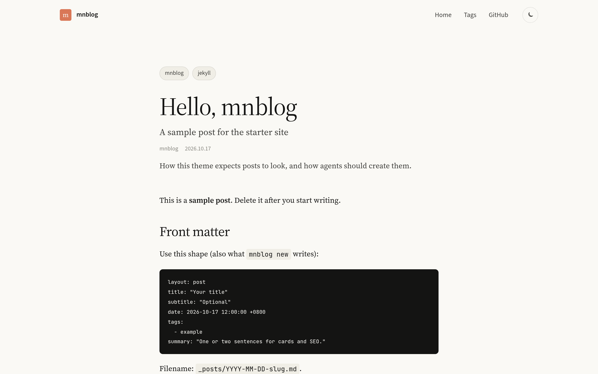
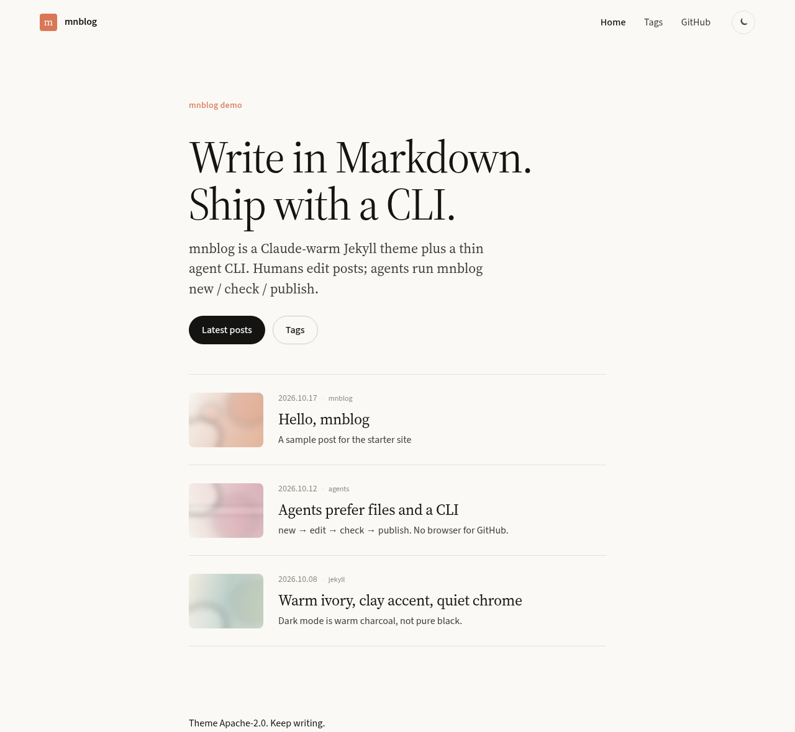
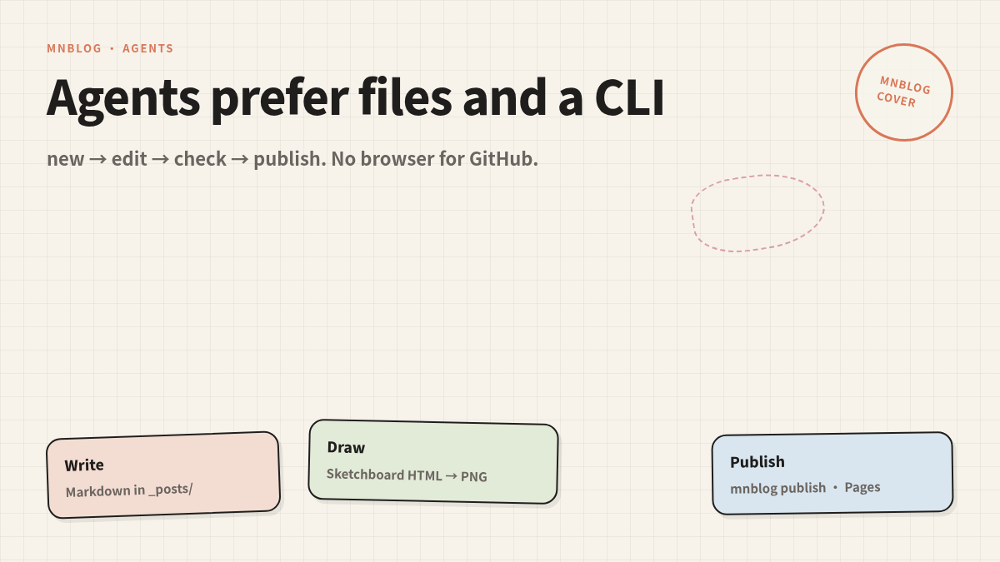
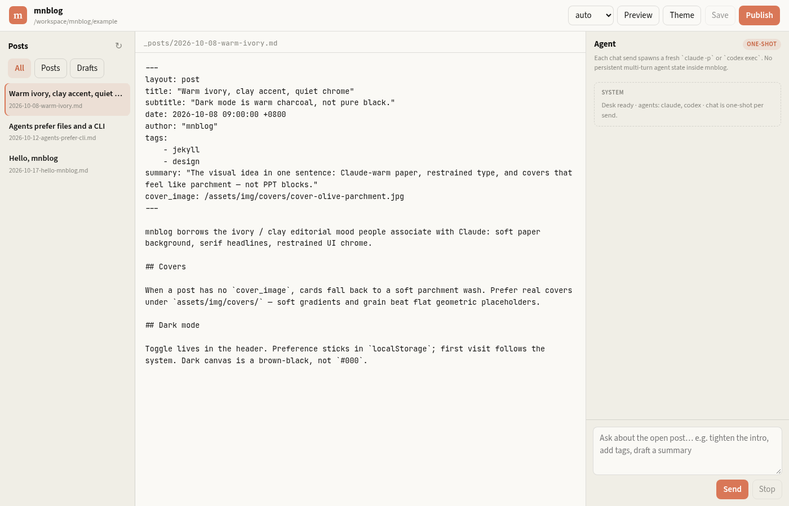

暖象牙的博客气质
Warm editorial look
浅色是象牙底，深色是暖褐黑。Source Serif 做标题，Source Sans 做正文。适合长文，不抢内容的戏。
Ivory light mode, warm charcoal dark. Serif headlines, sans body. Built for long reads, not flashy chrome.

Jekyll theme · Agent CLI
偏编辑气质的 Jekyll 主题：暖象牙底、clay 强调色、字号偏大。Markdown 进 _posts/；人和 agent 共用 mnblog CLI；封面可以用 sketchboard 画出来。
Ivory canvas, clay accent, Source Serif + Source Sans. Posts stay in _posts/. People and agents share the mnblog CLI. Covers come from sketchboard — no stock-photo hunt.
./bin/mnblog init ../my-blog

你会看到什么What it looks like
首页、文章、Desk、封面 —— 都是仓库里现成的图，不是占位。
Home, post, Desk, covers — assets already in the repo, not placeholders.
浅色是象牙底，深色是暖褐黑。Source Serif 做标题，Source Sans 做正文。适合长文，不抢内容的戏。
Ivory light mode, warm charcoal dark. Serif headlines, sans body. Built for long reads, not flashy chrome.

init → new → check → publish。需要本机 Claude Code / Codex 时用 ask / desk。不向 mnblog 配置云端 API key。
init → new → check → publish. Local Claude Code / Codex via ask / desk. mnblog never stores cloud API keys.

本地三栏 Desk 给人点；mnblog cover / draw 把手绘白板图渲成 PNG。有 Chrome 就直接出图。
Local three-pane Desk for humans. mnblog cover / draw render sketchboard HTML to PNG when Chrome is around.

怎么用How it works
建站、写文、出封面 —— 人和 agent 同一套文件。
Init, write, cover — same files for people and agents.
拷贝示例站，并把主题 vendoring 进新目录。
Copy the example and vendor the theme into a new folder.
mnblog init ../my-blog
生成带 front matter 的 Markdown，放进 _posts/。
Scaffold Markdown with front matter under _posts/.
mnblog new "标题"
sketchboard 手绘风 PNG，路径写进 front matter。
Sketchboard parchment PNG; path ready for front matter.
mnblog cover "标题"
Status
诚实边界：Desk 聊天每一发都是新的 CLI 进程；渲 PNG 需要本机 Chrome / Chromium。 Honest limits: Desk chat is one-shot per send; PNG render needs local Chrome / Chromium.